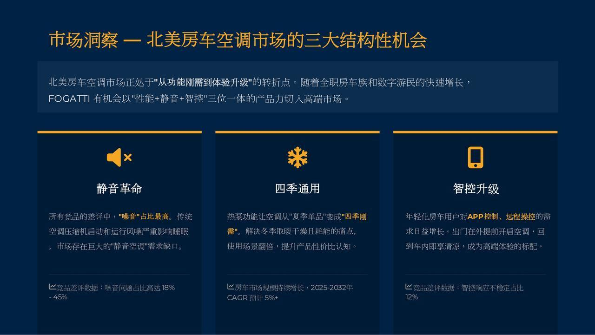
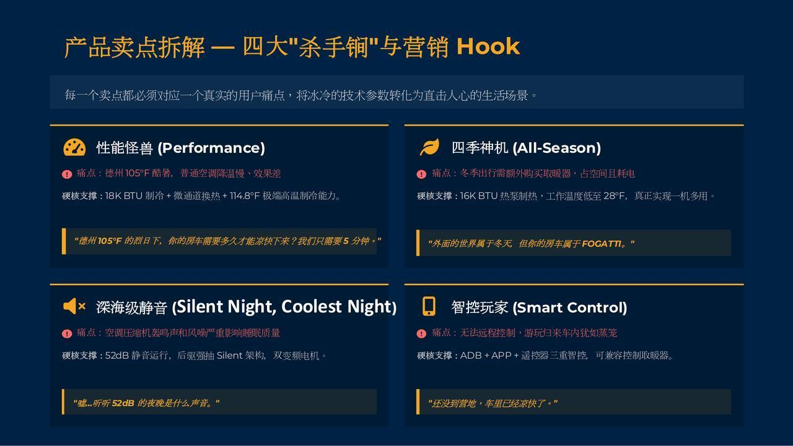

Insight 01
静音不是参数，是夜晚不被打扰。
竞品 1–3 星评价中，“噪音”相关抱怨约占 18–45%，因此将 52dB 深海级静音转译为睡眠、工作和营地生活中的体验价值。
From complaint → a memorable hook
01 · GTM launch · North American RV
为 FOGATTI 18K 房车空调搭建一套从市场洞察、产品定位到内容、渠道、线索承接的上市逻辑。核心任务不是把规格表翻译成英文，而是找到受众愿意记住、渠道愿意销售的理由。
2026 FOGATTI / MIZUDO portfolio · 3% of projected $32M revenue · planned budget, not actual spend

Built for real RV life
把产品功能放进真实的移动生活场景里，建立从信任到选择的长链路。
高客单、低频购买、长决策周期的产品，需要一套同时服务品牌与渠道的 GTM。
根据《海外 GTM 工作规划》，RV 空调同时面对 OEM 与 aftermarket 两类结构：前者重视供应能力与合作可信度，后者依赖经销商、安装商、DIY 改装者与终端车主的共同决策。
FOGATTI 已具备产品和供应链基础，但当时的传播问题不是“没有内容”，而是产品信息、品牌信任、销售工具和线索动作没有被放进一条连续的路径里。
因此，项目把新品上市拆成三个问题：市场上什么痛点值得占据？不同 RV 受众会在哪些平台受到影响？内容如何最终帮助 dealer、converter 与终端车主完成下一步行动？
我没有从“我们有哪些功能”开始，而是从竞品评价、RV 生活方式和渠道决策场景倒推：什么问题足够具体，能够变成产品选择理由。
Insight 01
竞品 1–3 星评价中，“噪音”相关抱怨约占 18–45%，因此将 52dB 深海级静音转译为睡眠、工作和营地生活中的体验价值。
From complaint → a memorable hook
Insight 02
通过热泵与 16K BTU 的产品逻辑，把“制冷产品”重新组织为面向更长使用周期的气候解决方案。
From feature → a wider use case
Insight 03
远程工作和长期 RV 生活增加了对稳定、可远程控制设备的需求，智能控制可以成为“移动房屋管理”的内容入口。
From control → a modern RV ritual
洞察依据：Amazon 竞品 1–3 星评价、RV 生活场景与渠道决策分析。
| 人群 | 生活状态 | 核心需求 | 内容入口 | 优先平台 |
|---|---|---|---|---|
| Hardcore outdoor modifiers | 改装与极限户外 | 耐用、可控、能应对极端环境 | 拆解、安装、真实测试、参数对比 | YouTube / Instagram |
| Full-time RV couples | 把 RV 当作长期居所 | 安静、稳定、四季舒适 | 夜间生活、远程工作、长期使用 | Instagram / Facebook |
| Weekend family campers | 周末和假期出行 | 易用、安全、全家舒适 | 家庭场景、快速设置、节日出行 | Instagram / Facebook |
| Entry-level campers | 从露营进入 RV | 容易理解、值得投入、低学习成本 | 入门指南、FAQ、购买前解释 | TikTok / Instagram |
细分不是为了制作四套孤立内容，而是为了给同一套资产安排不同的叙事顺序：先让人感到相关，再解释产品为什么值得选择。
01 · Awareness
用 15 秒短视频把夜晚噪音、炎热车厢、远程工作等问题放进真实场景。
Reels · TikTok · Paid reach
02 · Consideration
用 8–10 分钟 YouTube reviews、3D 技术拆解和 FAQ 解释 52dB、热泵与 BTU。
YouTube · Product page
03 · Decision
提供 30 分钟安装指南、dealer 资料包、落地页与再营销内容，承接高意向人群。
Landing page · Google · CRM
04 · Loyalty
用 #SilentCampChallenge 与 FOGATTI RV Owners Club 建立 UGC 和售后交流。
UGC · Facebook Group
05 · Channel
把内容重组为经销商培训、展会资料、product one-pagers 与线索分级规则。
Dealer · NTP · Meyer
| 触点 | 承担的任务 | 内容 / 资产 | 下一步动作 |
|---|---|---|---|
| 建立生活方式与品牌气质 | Reels、场景轮播、KOL 共创、产品标签 | 保存、关注、进入产品页 | |
| 覆盖成熟 RV 车主与社群 | IG 内容复用、服务内容、促销、RV 群组 | 咨询、加入群组、经销商联系 | |
| YouTube | 解释复杂产品，积累搜索信任 | 评测、安装教程、技术拆解、播放列表 | 观看完整解释、访问落地页 |
| TikTok | 扩大年轻露营人群触达 | 痛点短视频、快速演示、创作者剪辑 | 认识产品问题与记忆点 |
| Google / LinkedIn / CRM | 承接 B2B 线索与再营销 | PMax、搜索、LinkedIn lead ads、EDM、线索分级 | dealer / converter 咨询与跟进 |
GTM 的关键不是“每个平台都做得一样多”，而是让社媒的种草资产、搜索的需求承接、销售的培训资料与展会后的线索复用同一套定位。
依据海外 GTM 工作规划整理；其中 Google / LinkedIn 的预算与线索数字属于规划假设，不代表已实现结果。Creative system
视觉上保留 rugged outdoor 的真实感，同时加入 warm neutral、木质内饰和夜间灯光，让技术产品进入 mobile home 场景。内容形态覆盖 15–30 秒短内容与 5–10 分钟深度解释。
Natural light · real RV · product detail · warm comfort
Rights & reuse
优先选择 5K–50K 粉丝、全职 RV / DIY 领域的 micro creators，brief 中明确 Full Usage Rights，并把长视频拆成官方频道、短视频、Spark Ads、testimonial retargeting 等版本。
One creator brief → multiple channel assets

01
市场、评论、竞品、渠道和 RV 生活场景。
02
一句定位、三条核心利益、四类受众解释。
03
内容支柱、视觉系统、KOL brief、销售资料。
04
社媒、广告、展会、CRM 和渠道协同。
05
按曝光、互动、线索、转化与素材效率复盘。
这套流程与职业规划中希望发展的 GTM 角色相对应：从市场活动结果、预算与 ROI，到销售支持和跨部门协作，形成闭环。
下面分开呈现已经在项目材料中出现的执行数据，以及方案阶段的规划目标。它们都能说明工作方法，但证据属性不同。
Observed / recorded
项目月度数据中，Facebook giveaway 记录到 70,987 reach、7,646 engagements、7,353 ad clicks；Instagram 同期记录到 47,252 reach、1,557 engagements。另一轮 Instagram giveaway 记录到 +41 followers。
Planned / not actual results
规划材料中出现的 2M+ impressions、600K reach、季度 5+ long-form creator videos、20+ UGC assets，以及 18K 美元 / 150 leads / CPL 约 120 美元，均属于规划目标或预算推演，不在本页作为已实现结果。
数据口径：FOGATTI SNS 月度 Record、FOGATTI SNS 社媒策划 Plan、海外 GTM 工作规划。月度 Record 中的 Facebook / Instagram 数字为项目内部运营记录。
Strategic
用竞品评价与 RV 生活场景找到可占据的差异，而不是只罗列功能。
Operational
将平台角色、内容形式、KOL 权利、落地页和销售资料放进同一条链路。
GTM
同时考虑终端车主的信任、渠道的销售效率与后续线索复用，为全案策划提供业务视角。